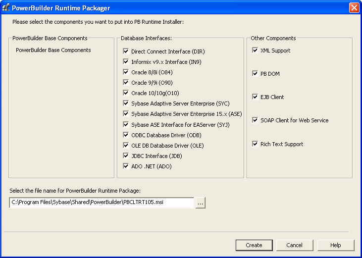

The PowerBuilder Runtime Packager is a tool that packages the PowerBuilder files an application needs at runtime into a Microsoft Windows Installer (MSI) package file. Windows Installer is an installation and configuration service that is installed with more recent Microsoft Windows operating systems.
You must have Microsoft Windows Installer on your system in order to run the RuntimePackager successfully. Microsoft provides a redistributable package for installation and upgrade on Windows 2000. The Installer is always available on Windows XP and Windows 2003.
To get more information and to obtain the latest version of Windows Installer, see the Microsoft documentation .
The Runtime Packager is intended for use with client applications installed on Windows systems. It does not package the files required if your application uses the DataWindow Web control for ActiveX or a plug-in, and it does not install most third-party components. See "Third-party components and deployment" for more information. Make sure that you read the sections referenced in Table 41-2 that apply to your application before using the Runtime Packager.
 To use the PowerBuilder Runtime Packager:
To use the PowerBuilder Runtime Packager:
Select Programs>Sybase>PowerBuilder 10.5>PowerBuilder Runtime Packager from the Windows Start menu or launch the pbpack105 executable file in your Shared\PowerBuilder directory.

Select a location for the generated MSI file.
Select the database interfaces your application requires.
The DLLs for the database interfaces you select are added to the package. For ODBC, the pbodb105.ini file is also added. For JDBC, the pbjdbc12105.jar and pbjvm105.dll files are also added. The Java Runtime Environment (JRE) is not added. For more information, see "JDBC database interface".
Other ODBC or OLE DB files your application may require, such as DataDirect drivers, are not added. For information about deploying these files, see "ODBC database drivers and supporting files" and "OLE DB database providers".
If your application uses DataWindow XML export or import or XML Web DataWindows, check the XML support check box.
The Runtime Packager adds PBXerces105.DLL, xerces-c_2_6.dll, and xerces-depdom_2_6.dll to the package
If your application uses the XML services provided by the PowerBuilder Document Object Model, if it is an EJB or SOAP Web services client, or if it uses a rich text control or DataWindow, select the appropriate check boxes.
The Runtime Packager adds the DLLs, PBXs, and JAR files required to the package. The Runtime Packager adds required files for both the EasySoap and .NET Web service engines when you select the SOAP Client for Web Service check box. For more information about required files for these services, see "PowerBuilder extensions".
Click Create.
The Runtime Packager creates an MSI file that includes the files required by the components you selected, as well as the following PowerBuilder runtime DLLs:
The MSI file is a compressed file that can be executed directly on any Windows platform. It registers any self-registering DLLs, adds the installation destination path to the Windows Registry, sets the system PATH environment variable, and adds information to the Registry for the Install/Uninstall page in the Windows Control Panel. It can also be used in some third-party installation software packages.